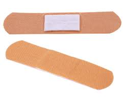

Answer: It is essential to know how to deal with common injuries such as cuts, bleeding, burns, choking, fainting, and fractures. It is also important to know how to act quickly in emergencies such as seizures or drowning.
Answer: It is not necessary to have formal training to provide basic first aid, but it is helpful to take a course to get comprehensive instructions. And increase confidence when dealing with emergencies.
A first aid kit contains essential equipment to help provide immediate care for minor emergencies. These are the most important equipment that should be in it:
- Sterile gauze
- Wound dressings
- Medical adhesive 
- Disinfectant solution
- scissors
- Medical gloves
- Tweezers
- Sterile saline solution
- Antibiotic cream
- Pain relievers
- Thermometer
- Cold and hot compresses
- Ventilator equipment
- Flexible medical tapes
- First aid booklet

.jpeg)


Answer: If the person is unconscious but breathing Place him in the recovery position (left side) and avoid moving him. If he is not breathing, start cardiopulmonary resuscitation (CPR) and call emergency services immediately.
Answer: The bleeding site should be pressed with a clean cloth to control the bleeding, the injured part should be raised if possible, and emergency services should be contacted if the bleeding is severe.
- Remove the person from the heat source.
- Burn cooling:
- Avoid touching blisters or removing burned skin.
- Burn cover:
- Avoid using non-medical materials:
- Provide pain relievers if needed.
- Call for medical help if the condition is serious.
Place the affected area under cool, not ice, water for 10-20 minutes. Water helps relieve pain and reduces tissue destruction. Avoid applying ice directly to the burn, as it may cause tissue damage.
Use a sterile gauze or clean, non-stick bandage to gently cover the burn, avoiding the use of Cotton because it may stick to the wound.
Avoid applying household creams, oils, or any non-sterile materials to the burn, as they may contaminate the wound or slow down the healing process.